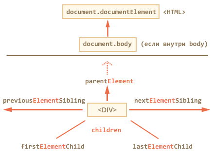

DOM позволяет делать что угодно с HTML-элементом и его содержимым, но для этого нужно сначала нужный элемент получить.
Доступ к DOM начинается с объекта document. Из него можно добраться до любых узлов.
Так выглядят основные ссылки, по которым можно переходить между узлами DOM:

Сверху documentElement и body
Самые верхние элементы дерева доступны напрямую из document.
<HTML> = document.documentElementЭто свойство ссылается на DOM-объект для тега <html>.
<BODY> = document.bodyСоответствует тегу <body>.
Дети: childNodes, firstChild, lastChild
Здесь и далее мы будем использовать два принципиально разных термина.
- Дочерние элементы (или дети) – элементы, которые лежат непосредственно внутри данного. Например, внутри
<HTML>обычно лежат<HEAD>и<BODY>. - Потомки – все элементы, которые лежат внутри данного, вместе с их детьми, детьми их детей и так далее. То есть, всё поддерево DOM.
Псевдо-массив childNodes хранит все дочерние элементы, включая текстовые.
Пример ниже последовательно выведет дочерние элементы document.body:
<!DOCTYPE HTML>
<html>
<body>
<div>Начало</div>
<ul>
<li>Информация</li>
</ul>
<div>Конец</div>
<script>
for (var i = 0; i < document.body.childNodes.length; i++) {
alert( document.body.childNodes[i] ); // Text, DIV, Text, UL, ..., SCRIPT
}
</script>
...
</body>
</html>Свойства firstChild и lastChild обеспечивают быстрый доступ к первому и последнему элементу.
elem.childNodes[0] === elem.firstChild
elem.childNodes[elem.childNodes.length - 1] === elem.lastChildСоседи и родитель
Доступ к элементам слева и справа данного можно получить по ссылкам previousSibling / nextSibling.
Родитель доступен через parentNode. Если долго идти от одного элемента к другому, то рано или поздно дойдёшь до корня DOM, то есть до document.documentElement, а затем и document.
Навигация только по элементам
Навигационные ссылки, описанные выше, равно касаются всех узлов в документе. В частности, в childNodes сосуществуют и текстовые узлы и узлы-элементы и узлы-комментарии, если есть.
Но для большинства задач текстовые узлы нам не интересны.
Поэтому посмотрим на дополнительный набор ссылок, которые их не учитывают:
Эти ссылки похожи на те, что раньше, только в ряде мест стоит слово Element:
children– только дочерние узлы-элементы, то есть соответствующие тегам.firstElementChild,lastElementChild– соответственно, первый и последний дети-элементы.previousElementSibling,nextElementSibling– соседи-элементы.parentElement– родитель-элемент.
Модифицируем предыдущий пример, применив children вместо childNodes.
Теперь он будет выводить не все узлы, а только узлы-элементы:
<!DOCTYPE HTML>
<html>
<body>
<div>Начало</div>
<ul>
<li>Информация</li>
</ul>
<div>Конец</div>
<script>
for (var i = 0; i < document.body.children.length; i++) {
alert( document.body.children[i] ); // DIV, UL, DIV, SCRIPT
}
</script>
...
</body>
</html>Всегда верны равенства:
elem.firstElementChild === elem.children[0]
elem.lastElementChild === elem.children[elem.children.length - 1]Особые ссылки для таблиц
У конкретных элементов DOM могут быть свои дополнительные ссылки для большего удобства навигации.
Здесь мы рассмотрим таблицу, так как это важный частный случай и просто для примера.
TABLE
table.rows– коллекция строкTRтаблицы.table.caption/tHead/tFoot– ссылки на элементы таблицыCAPTION,THEAD,TFOOT.table.tBodies– коллекция элементов таблицыTBODY, по спецификации их может быть несколько.
THEAD/TFOOT/TBODY
tbody.rows– коллекция строкTRсекции.
TR
tr.cells– коллекция ячеекTD/TH.tr.sectionRowIndex– номер строки в текущей секцииTHEAD/TBODY.tr.rowIndex– номер строки в таблице.
TD/TH
td.cellIndex– номер ячейки в строке.
Пример использования:
<table>
<tr>
<td>один</td> <td>два</td>
</tr>
<tr>
<td>три</td> <td>четыре</td>
</tr>
</table>
<script>
var table = document.body.children[0];
alert( table.rows[0].cells[0].innerHTML ) // "один"
</script>